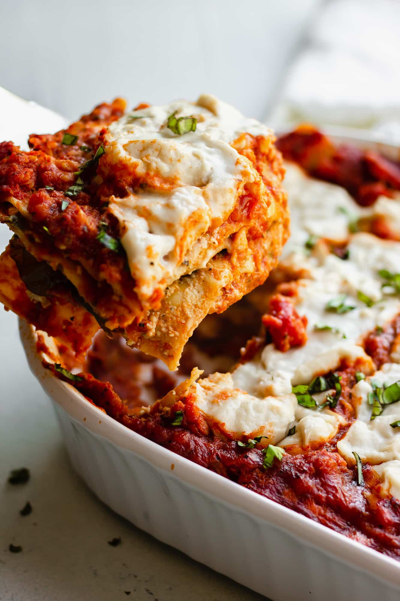

Lasagna you would lie to your Grandmother about.

Description
Experience classic comfort food with a delicious, plant-based twist.
Our Hearty Vegan Lasagna features layers of tender pasta, a rich and savory lentil marinara, and a creamy,
herb-infused tofu "ricotta." Baked to bubbly perfection and topped with melted vegan mozzarella, it's a crowd-pleasing dish so satisfying,
you'll never miss a thing. Perfect for a family dinner or a special occasion that will delight vegans and non-vegans alike.
Ingredients
Preparation
-
Prepare the Components
-
Noodles: Cook the lasagna noodles according to package directions.
If using no-boil noodles, you can skip this step.
-
"Ricotta":In a medium bowl, crumble the pressed tofu with your hands.
Add the nutritional yeast, lemon juice, garlic powder, fresh herbs, salt, and pepper. Mix until well combined and set aside.
-
Sauce: In a large pot, sauté the onion in olive oil over medium heat until soft.
Add the garlic and cook for one minute. Stir in the rinsed lentils, marinara sauce, and vegetable broth.
Bring to a simmer and cook for 20-25 minutes, until the lentils are tender.
-
Assemble the Lasagna:
-
Preheat your oven to 375°F (190°C).
-
Spread a thin layer of the lentil sauce on the bottom of a 9x13 inch baking dish.
-
Arrange a single layer of noodles over the sauce.
-
Spread half of the tofu "ricotta" mixture over the noodles.
-
Add another layer of lentil sauce, followed by a layer of noodles.
-
Spread the remaining "ricotta," and top with another layer of sauce.
Finish with a final layer of noodles and a generous layer of sauce on top.
-
Top and Bake:
-
Sprinkle the vegan mozzarella cheese evenly over the top layer of sauce.
-
Cover the baking dish tightly with aluminum foil and bake for 25 minutes.
-
Remove the foil and bake for another 15-20 minutes,
or until the cheese is melted and bubbly and the edges are browned.
-
Rest and Serve:
Remove the lasagna from the oven and let it rest for at least 10 minutes.
This is a crucial step that helps the layers set, making it much easier to slice and serve.
Garnish with fresh basil before serving.
Odin Recipes